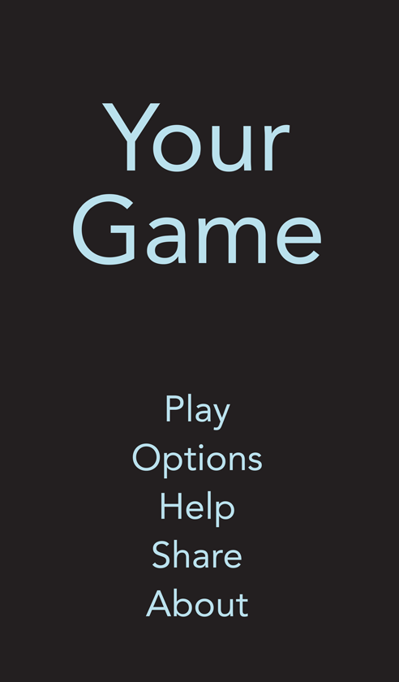

Color and Typography
Color Enhances Communication
In iOS 7, color helps indicate interactivity, impart vitality, and provide visual continuity. The built-in apps use a family of pure, clean colors that look great individually and in combination, and on both light and dark backgrounds.
If you create multiple custom colors, make sure they work well together. For example, if pastels are essential to your app’s style, you should create a family of coordinating pastels that can be used throughout the app.
Pay attention to color contrasts in different contexts. For example, if there’s not enough contrast between the navigation bar background and the bar-button titles, the buttons will be hard for users to see. A rule of thumb is to start with a contrast of at least 50% between colors that need to be distinguishable. Test the result by viewing it on a device in different lighting conditions, including outdoors on a sunny day.
Take bar translucency and app content into account when you use a custom bar tint. If you need to create a bar tint that matches a specific color, such as a color in an existing brand, you may have to experiment with various colors before you get the results you want. A bar’s appearance is affected by both the translucency that iOS provides and the appearance of the app content that can be behind the bar.
Be aware of color blindness. Most color blind people have difficulty distinguishing red from green. Test your app to make sure that there are no places where you use red and green as the only way to distinguish between two states or values (some image-editing software includes tools that can help you proof for color-blindness). In general, it’s a good idea to use more than one way to indicate an element’s interactivity (to learn more about indicating interactivity in iOS 7, see Interactive Elements Invite Touch).
Consider choosing a key color to indicate interactivity and state. Key colors in the built-in apps include yellow in Notes and red in Calendar. If you define a key color to indicate interactivity and state, make sure that the other colors in your app don’t compete with it.
Avoid using the same color in both interactive and noninteractive elements. Color is one of the ways that a UI element indicates its interactivity. If interactive and noninteractive elements have the same color, it’s harder for users to know where to tap.
Color communicates, but not always in the way you intend. Everyone sees color differently, and many cultures differ in how they assign meanings to colors. Spend time to research how your use of color might be perceived in other countries and cultures. As much as possible, you want to be sure that the colors in your app send the appropriate message.
In most cases, don’t let color distract users. Unless color is essential to your app’s purpose, it usually works well to use color as a subtle enhancement.
Text Should Always Be Legible
Above all, text must be legible. If users can’t read the words in your app, it doesn’t matter how beautiful the typography is. When you adopt Dynamic Type in an iOS 7 app, you get:
Automatic adjustments to letter spacing and line height for every font size
The ability to specify different text styles for semantically distinct blocks of text, such as
Body,Footnote, orHeadlineText that responds appropriately to changes the user makes to text-size settings (including accessibility text sizes)
Adopting Dynamic Type requires some work on your part. To learn how to use text styles and ensure that your app gets notified when the user changes the text size setting, see “Text Styles” in Text Programming Guide for iOS.
Prioritize content when responding to text-size changes. Not all content is equally important to users. When users choose a larger text size, they want to make the content they care about easier to read; they don’t always want every word on the screen to be larger.
For example, when users choose a large accessibility text size, Mail displays the subject and body of the message in the large size but leaves the less important text—such as the date and the sender—in a smaller size.
When appropriate, adjust the layout when the user chooses a different text size. For example, you might want to change a one-column layout of body text to a two-column layout when the user chooses a small text size. If you decide to adjust the layout for different text sizes, you might choose to do so for subsets of sizes—such as small, medium, and large—rather than change the layout for every possible size.
Make sure all styles of a custom font are legible at different sizes. One way to do this is to emulate some of the ways iOS displays font styles at different text sizes. For example:
Text should never be smaller than 11 points, even when the user chooses the extra-small text size. For comparison, the body style uses a font size of 17 points at the large size, which is the default text-size setting.
In general, font size and leading values differ by one point per text-size setting. Exceptions to this are the two caption styles, which use the same font size, leading, and tracking at the extra-small, small, and medium settings.
At the smallest three text sizes, tracking values are relatively large; at the largest three text sizes, tracking values are relatively tight.
The headline and body styles use the same font size. To distinguish it from the body style, the headline style uses a heavier weight.
Text in a navigation controller uses the same font size that body style text uses for the large setting (specifically, 17 points).
Text always uses either regular or medium weight; it doesn’t use light or bold.
In general, use a single font throughout your app. Mixing several different fonts can make your app seem fragmented and sloppy. Instead, use one font and just a few styles and sizes. Use the UIFont text styles API to define different areas of text according to semantic usage, such as body or headline.
Recommended
Not Recommended
Copyright © 2014 Apple Inc. All rights reserved. Terms of Use | Privacy Policy | Updated: 2014-03-10